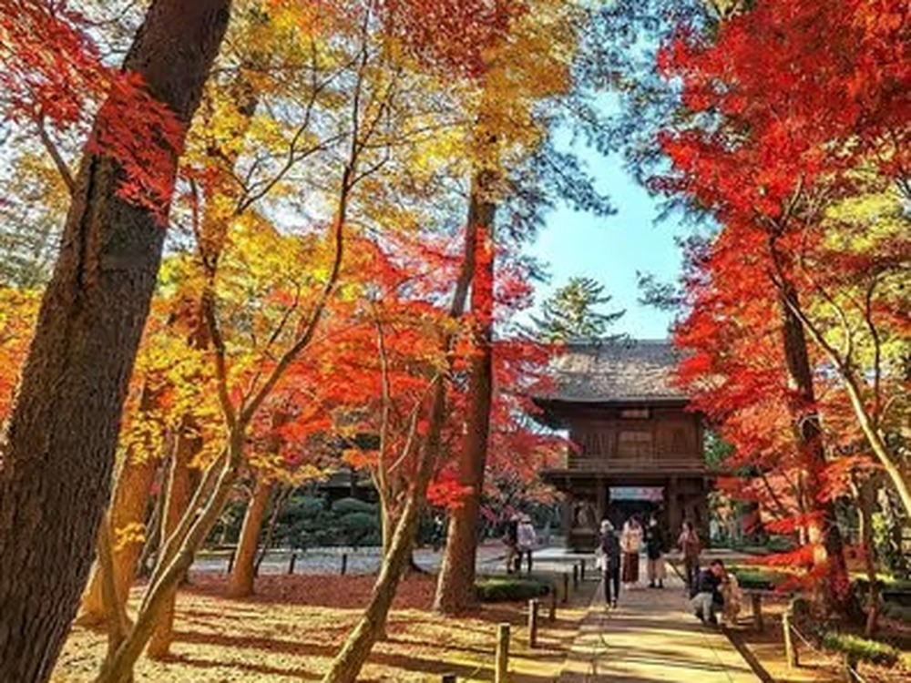

The Zen Monastery in the Woods, 30 Minutes from Ikebukuro
There is a moment on this walk that I have stopped trying to describe to guests in advance, because describing it ruins it. You pass under the Sanmon — a heavy wooden gate, dark with age — and within about ten steps the sound of the road behind you is simply gone. Not quieter. Gone. Replaced by cedar branches moving somewhere far above your head.
That gate belongs to Heirinji, a Rinzai Zen temple in Niiza, just over the Tokyo border in Saitama. It is roughly thirty minutes from Ikebukuro by train, which means it is closer to central Tokyo than Kamakura, Nikko, or almost anywhere else people are told to go when they want a temple that feels real. And on most days you can walk its forest paths without seeing another visitor.

A working monastery, not a museum
This is the part most people get wrong about Heirinji. It is not a preserved site with a gift shop attached. It is an active training monastery — one of the most significant Rinzai Zen temples in eastern Japan — where monks still live and train today. Certain areas are closed off entirely, and that restriction is not a tourism decision; it is the reason the atmosphere survives at all.
Founded in the Muromachi era and later moved to this spot in the Musashino woods, the temple sits on grounds that are genuinely forested. That is rare in the Tokyo area. Most temples here are hemmed in by apartment blocks; the trees are decorative. At Heirinji the forest came first and the buildings were placed inside it, so the scale feels inverted — you are small, the cedars are old, and the Butsuden appears through the trunks rather than at the end of a paved approach.
If you'd rather walk it with someone who knows which paths lead where, I run a small-group walk here — three guests maximum, about two and a half hours, matcha included.
What's actually on the walk
The route I take guests on is a loop rather than a straight line to the main hall. It passes the Hojo garden, the Matsudaira clan cemetery — feudal lords, under moss, with almost no signage in English — and the quiet pilgrimage path that connects ten tombs through the trees. That last stretch is my favourite part of the whole tour, and it is the part no guidebook mentions.
In November the same grounds become something else entirely. Over a hundred varieties of maple turn the valley red and gold, and the temple gets what I think is the best autumn foliage in the greater Tokyo area. Kyoto and Nikko get the crowds. Heirinji gets the leaves.
The tea afterwards
We finish at Hirune no Mori Chuei, a teahouse-style café tucked into the woods a short walk from the temple grounds. Seasonal tea, a handmade Japanese sweet, sometimes a bowl of soba if the weather has been unkind. Sitting there with matcha after an hour of walking under cedars is, in my honest opinion, the most efficient way to understand Zen that exists — considerably more efficient than reading about it.
Practical notes
Come in comfortable shoes; the paths are earth and gravel, not stone. Dress for the weather, because the forest is several degrees cooler than the station. Smoking is not permitted anywhere on the grounds. And keep your voice down — not out of politeness to me, but because people are training here, and the silence is the thing you came for.
Walk the monks' path with a local
Heirinji Zen Temple & Matcha — small group (max 3), English-guided, ★5.0 on GetYourGuide.
Check dates & book →Building the rest of your Tokyo days?
A quiet forest morning pairs surprisingly well with something loud and modern in the afternoon — guests often add teamLab Planets in Toyosu on the same trip, or browse other Tokyo experiences to fill the gaps.
Some links on this page are affiliate links — booking through them supports this site at no extra cost to you.